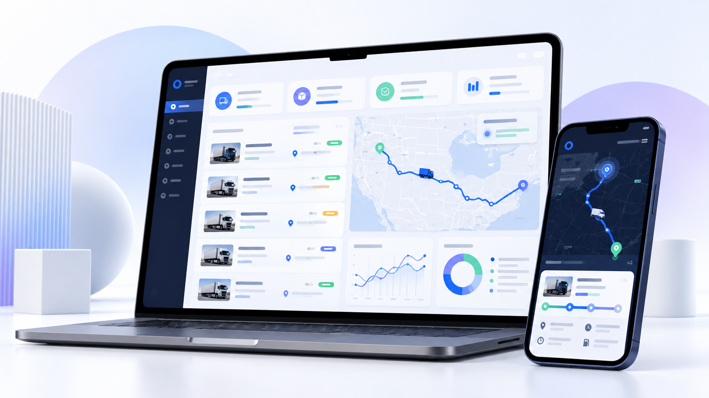

LET Driver
Mobile-first workflows for loads, documents, and connected tracking.
Independent builder · Cleveland, Ohio
I turn messy processes into clear, useful digital tools — from a sharp public website to the internal system your team relies on every day.
Explore the work ↓
01 / Selected work
Mobile-first workflows for loads, documents, and connected tracking.
A focused workspace for finding loads, seeing details, and taking action.
Dashboards that help teams spot what needs attention and decide what to do next.
02 / What I can help with
Purpose-built tools for workflows that generic software cannot quite fit.
Scheduling, time and attendance, requests, forms, and coordination.
Fast, responsive sites and practical experiences that are easy to update.
Connect repeatable steps, surface useful signals, and support teams on the move.
Local search foundations, maintenance, improvements, and reliable support.
03 / Industry solutions
Gas station and convenience operations · Logistics and dispatch · Local and growing teams
04 / A practical process
Understand → Design → Build → Launch → Maintain
05 / Make the next step clearer
Tell me what you want to improve, simplify, or bring to life.
sonysimon.business@gmail.com ↗Replace this placeholder before publishing.